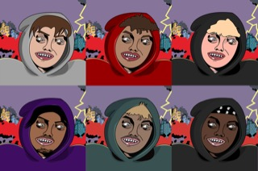
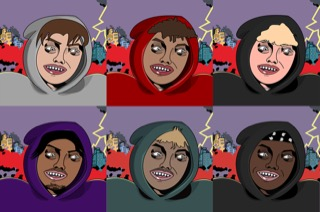

Ethan Larson
Hello there! My name is Ethan Larson, and I have been working in different fields since I was 14 years old. The first job I took up was a janitor position for SCAN Clinton Community Center, that I was placed in by the Summer Youth Employment Program. I’ve also worked with the Museum of Natural History in New York City as an intern for a summer.
I'm a passionate learner that is committed and motivated. I aspire to have a good influence through my work experiences and feel that learning and personal development are lifelong pursuits. I'm currently working as a janitor and an intern for the Summer Youth Employment Program (SYEP) at the Museum of Natural History, where I'm learning useful practical skills.
I have the wonderful opportunity to fully immerse myself in the fascinating field of natural sciences as an intern at the Museum of Natural History. I have been involved in numerous projects focused at preserving and promoting our planet's rich biodiversity, working together with knowledgeable curators and experts. I have learned so much about the inner workings of a prominent institution from classifying specimens, helping with display design, performing research, and planning educational programs.
I've had the opportunity to develop a strong eye for detail and a profound understanding of the value of truth and authenticity in scientific presentations thanks to my experience at the museum. I've had the honor of helping to develop educational exhibits and displays that interest people of all ages and backgrounds. I have also developed my research abilities by exploring the fields of anthropology, ecology, and other fascinating sciences.
Prior to my internship, I worked as a janitor under SYEP, a youth employment program based in New York City. Although it may appear that this job has little to do with my academic pursuits, it has taught me important life lessons and given me a sense of responsibility. Through the SYEP, I've had the chance to strengthen my work ethic, learn how to manage my time effectively, and become an effective team player with my co-workers.
I am eager to advance my knowledge and abilities in different fields in the future. I am confident in my capacity to contribute meaningfully and succeed in any professional setting thanks to my devotion, adaptability, and passion for learning.
Experience
Docent
• The youngest person selected for that summer’s Saltz high school internship program.
• Educated museum visitors on various exhibits and artifacts throughout the day.
• Demonstrated self-reliance by meeting and exceeding workflow needs and successfully accomplishing internship goals
Custodian
• Performed a variety of indoor and outdoor janitorial duties.
• Recorded routine inspection and maintenance activities in accordance with management requirements.
• Participated in career training activities weekly through the Summer Youth Employment Program.
Graphic Designer
• Regularly create visual art and graphic design pieces digitally.
• Experience with Adobe Photoshop and Adobe Illustrator
Education
UC Riverside
Portfolio


 
